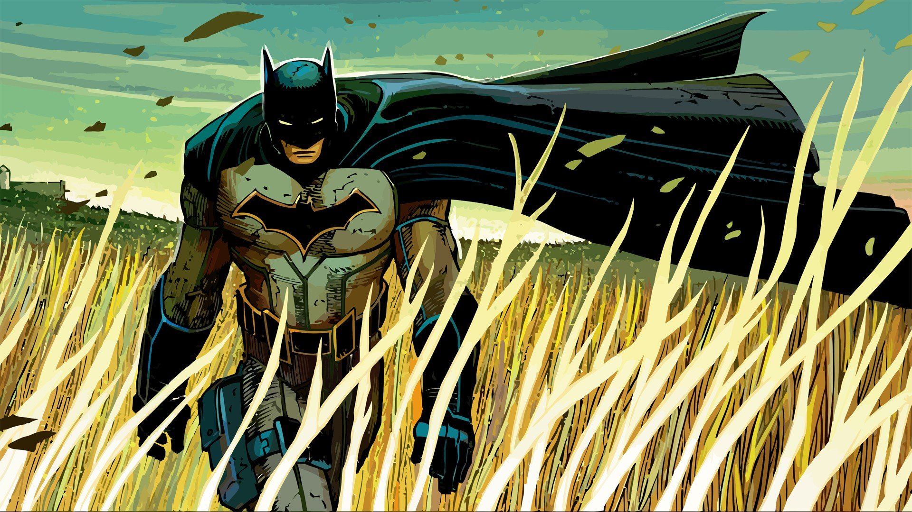

Let’s face it: Batman is the coolest
Even for a comic book fan like me, one who spends an inordinate amount of time fixated on the Complete Marvel Universe, reading Batman is almost always a good decision. It’s no surprise there are 6 (nearly 7) Batman stories within my top 50 of the best comics of all time.
Whether you’re here from the comics, the Arkham video games, or the Dark Knight movies, there’s a glut of reading options all leading to the same question: Where do I start with Batman comics?
I’ll answer that here in a relatively expedient manner. Note, that Batman made his comic book debut more than 75 years ago. I won’t mention every comic he’s been in since then, and trying to read all of them would be an intimidating (if noble) life goal. Instead, we’ll focus on the comics that make Batman so great, and how you can enjoy them in a chronological order.
Where To Start With Batman Comics?
I) Creation: Batman in the 1940’s and 1950’s
II) Formation of the Bat: The Neal Adams Years – Late 60’s Through 1970’s
III) Year One & The Modern Bat (Most New Readers Should Start Here!)
IV) Knightfall: Bane Breaks the Bat (Early 90’s)
V) Batman: No Man’s Land (Late 90’s to Early 2000’s)
VI) Bruce Wayne Fugitive, Hush, & Under the Red Hood (Early to Mid 2000’s)
VII) Grant Morrison’s Batman Reading Order (Late 2000’s)
VIII) New 52 Batman Reading Order (2011 to 2015)
IX) DC Rebirth
X) Future of the Dark Knight (The Dark Knight Returns graphic novels)

Dave’s Faves: Best and Essential Batman Fast Track!
If you want just the best of the best, I’ve listed my favorite Batman stories below. Otherwise, you can carry on to check out the complete reading order and chronology!
1.Batman: Year One
2.Batman: The Dark Knight Returns
3.Gotham Central
4.Batman: The Long Halloween + Dark Victory
5.Batman (New 52) by Scott Snyder and Greg Capullo
6.Batman: The Black Mirror
7.Batman: Arkham Asylum
8.Batman & Robin by Grant Morrison and Frank Quitely
9.JLA: Tower of Babel
10.Batman: I Am Gotham by Tom King for DC Rebirth